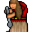

Madame Mim¶| Stat | Value |
|---|---|
| Class | humanoid |
| HP | 220 |
| Max AP | 10 |
| Attack cost | 7 |
| Move cost | 10 |
| Damage | 5 to 10 |
| Attack chance | 200 |
| Block chance | 200 |
| Damage resistance | 15 |
| Critical skill | 10 |
| Critical multiplier | 5.0 |
On hit¶
- Heal HP: 2 to 20
- On target: Chaotic curse (magnitude 1, 2 rounds, 50% chance); Confusion (magnitude 1, 2 rounds, 50% chance); Internal bleeding (magnitude 1, 3 rounds, 10% chance); Bleeding wound (magnitude 2, 10 rounds, 50% chance)
Shop stock¶
| Item | Chance | Qty |
|---|---|---|
| Sharpened gem | 100% | 1 to 5 |
| Gold coins | 100% | 300 to 5200 |
Found on¶
Quests¶
- Fog in the woods: stages 30, 80, 90, 92
- feygard fog (hidden flag): stages 1, 2, 3, 4, 5, 7, 8, 9
Dialogue (48 lines)
What the dialogue says, exactly as in the game files. Lines are listed once; links jump to the line a choice leads to.
swamp_witch (silent check: the first matching branch below is taken)
- Next (if reached stage 90 of Fog in the woods) → swamp_witch_90
- Next (if reached stage 80 of Fog in the woods) → swamp_witch_80
- Next → swamp_witch_20
swamp_witch_90 Madame Mim: “Oh - how did you pass through my distraction fence?”
- Next → swamp_witch_90_10
swamp_witch_80 Madame Mim: “You again! You promised me peace and solitude!”
- Next → swamp_witch_90_10
swamp_witch_20 Madame Mim: “Who dares disturb my solitude? Be gone, or face my wrath!” — effects: sets stage 30 of Fog in the woods
- “Sorry. I got lost in the fog.” → swamp_witch_20_10
- “I am not afraid of you. (You grope for your weapon)” → swamp_witch_20_210
swamp_witch_90_10 Madame Mim: “Go away!”
- “OK, sorry for disturbing your peace.” → conversation ends
- “Can I buy more of your medicinal water?” → swamp_witch_90_20
swamp_witch_20_10 Madame Mim: “Oh, how touching. The brave little hero got themselves lost, did they?”
- Next → swamp_witch_20_12
swamp_witch_20_210 Dummy NPC: “The old witch raises her hands, chanting ominously.”
- Next → swamp_witch_20_212
swamp_witch_90_20 Madame Mim: “Well, if you promise to finally leave me alone afterwards.”
- “Sure” → shop opens
swamp_witch_20_12 Madame Mim: “And now you expect me to help you? Ha!”
- “Yes, please.” → swamp_witch_20_30
- “No. I can handle myself as always.” → conversation ends
- “I managed to defeat the fog monsters that caused it.” → swamp_witch_20_20
swamp_witch_20_212 Madame Mim: “A curse upon you, little one! May darkness be your companion, and fear be your guide!”
- “I won't let you curse me! (Draws the weapon)” → swamp_witch_20_214
- “I'm sorry, ma'am. Please forgive me.” → swamp_witch_20_24
- “Wait! Spare me please. I'll give you ...” → swamp_witch_20_220
swamp_witch_20_30 Madame Mim: “[Grumbles] Lost, you say? It's your own fault for wandering where you don't belong. I prefer to be left alone, away from the meddling of outsiders.”
- “I understand, and I'm really sorry. I promise I'll leave as soon as you point me in the right direction.” → swamp_witch_20_40
swamp_witch_20_20 Madame Mim: “Defeated my fog monsters, did you? Meddlesome brat!”
- Next → swamp_witch_20_22
swamp_witch_20_214 Madame Mim: “Hahaha! You? Defeat me? We shall see!”
- “Attack!” → fight starts
swamp_witch_20_24 Madame Mim: “And?”
- “And I just wanted to find my way to Feygard.” → swamp_witch_20_40
- “I just want to find my way home.” → swamp_witch_20_40
swamp_witch_20_220 Madame Mim: “Oh, the heroic little braveheart, off to save their own skin.”
- Next → swamp_witch_20_222
swamp_witch_20_40 Madame Mim: “[Grinning wickedly] That is easy. Go outside and far away. As fast as possible.”
- “Thank you! You're really kind ...” → swamp_witch_20_42
swamp_witch_20_22 Madame Mim: “Those creatures were my only protection from unwanted visitors like you!”
- “I didn't know. The fog was disorienting ...” → swamp_witch_20_24
- “I'm sorry, I didn't mean to disturb you.” → swamp_witch_20_24
- “Not much of a protection, were they.” → swamp_witch_20_200
swamp_witch_20_222 Madame Mim: “What do you offer me?”
- “100 gold coins” (if pay 100 gold) → swamp_witch_20_228
- “My Ring of the Lesser Shadow” (if carry 1× Ring of lesser Shadow) → swamp_witch_20_228
- “My Ring of the Lesser Shadow” (if NOT carry 1× Ring of lesser Shadow) → swamp_witch_20_228b
- “A quick death” → swamp_witch_20_214
swamp_witch_20_42 Madame Mim: “What?”
- “... despite what I have always heard about witches in the swamp.” → swamp_witch_20_50
swamp_witch_20_200 Madame Mim: “[Grinning wickedly] I think it's time you learn a lesson, meddling child.”
- “What are you going to do?” → swamp_witch_20_210
swamp_witch_20_228 Madame Mim: “I have no need for that. But I will take it nevertheless.”
- “NO! I changed my mind.” → swamp_witch_20_222
swamp_witch_20_228b Madame Mim: “You don't even have this ring. Don't show off like that!”
- “Eh ...” → swamp_witch_20_222
swamp_witch_20_50 Madame Mim: “[Gruffly] Kind? Bah! I simply don't want the likes of you lingering around here.”
- Next → swamp_witch_20_60
swamp_witch_20_60 Madame Mim: “Now, listen carefully, child. I will wait a few minutes before I create fog again.”
- Next → swamp_witch_20_62
swamp_witch_20_62 Madame Mim: “Be sure to be out of the area.”
- “I appreciate your help. I promise I'll be away for good. But can I ask you something else before I leave?” → swamp_witch_20_70
swamp_witch_20_70 Madame Mim: “[Sighs] Make it quick, then. I don't have all night.”
- “Why do you live all alone in this swamp? Don't you ever get lonely?” → swamp_witch_20_80
swamp_witch_20_80 Madame Mim: “Men used to laugh at me. They threw stones at me and finally tried to burn my house.”
- Next → swamp_witch_20_82
swamp_witch_20_82 Madame Mim: “All I want is peace and to enjoy my lovely garden outside.”
- “You mean the swamp?” → swamp_witch_20_84
- “Eh, yes, your garden is beautiful.” → swamp_witch_20_90
- “You want peace and loneliness?” → swamp_witch_20_100
swamp_witch_20_84 Madame Mim: “How dare you!”
- Next → swamp_witch_20_200
swamp_witch_20_90 Madame Mim: “Yes, it is. At least one person who knows beauty when they see it.”
- Next → swamp_witch_20_92
swamp_witch_20_100 Madame Mim: “Loneliness is a price I'm willing to pay for my solitude.”
- Next → swamp_witch_20_102
swamp_witch_20_92 Madame Mim: “Well, I shall spare you... this time. Now leave my sight and never return!”
- “It was sort of nice to meet you.” → conversation ends
swamp_witch_20_102 Madame Mim: “People fear me because of my powers, and I grow weary of their endless superstitions and suspicions. Here, far from any village, I can be myself without interference.”
- Next → swamp_witch_20_104
swamp_witch_20_104 Madame Mim: “Here I have found peace at last.”
- “I'm sorry people treat you that way. But maybe if they got to know you, they wouldn't be so afraid.” → swamp_witch_20_110
swamp_witch_20_110 Madame Mim: “Bah! Humans will always fear what they don't understand.”
- “Maybe you are right. Let me think ...” → swamp_witch_20_120
- “Right. And now you should fear me - attack!” → fight starts
swamp_witch_20_120 Madame Mim: “Hmph, fine. But be quick about it.”
- “Shrink the fog in the north.” → swamp_witch_20_130
- “Release the fog.” → swamp_witch_20_140
swamp_witch_20_130 Madame Mim: “[Eyeing you suspiciously] What?!”
- “People have trouble that the way to Feygard goes through your fog. If you make your fog a little smaller in the north,…” → swamp_witch_20_132
swamp_witch_20_140 Madame Mim: “[Eyeing you suspiciously] What?!”
- “People have trouble that the way to Feygard is barred by your fog. No fog on the road, no reason to visit you.” → swamp_witch_20_142
swamp_witch_20_132 Madame Mim: “Hmm. Sounds reasonable.”
- Next → swamp_witch_20_134
swamp_witch_20_142 Madame Mim: “Hmm. Sounds reasonable.”
- “And being a witch, you can certainly put a spell around your swamp that will distract people from wanting to come here.” → swamp_witch_20_144
swamp_witch_20_134 Madame Mim: “Agreed. Here child, take these sweets and now begone!” — effects: sets stage 80 of Fog in the woods, sets stage 8 of feygard fog (hidden flag), sets stage 7 of feygard fog (hidden flag), clears stage 1 of feygard fog (hidden flag), clears stage 6 of feygard fog (hidden flag), spawns monsters on guynmart_wood_14
- “Thank you.” → conversation ends
- “[grumbling] Sweets - I am no kid anymore.” → conversation ends
swamp_witch_20_144 Madame Mim: “Swamp! what did you name my beautiful peace of land??”
- “Well, what else is it?” → swamp_witch_20_84
- “Uh, garden, I meant.” → swamp_witch_20_150
swamp_witch_20_150 Madame Mim: “A distraction spell. That I didn't think of it myself ...”
- Next → swamp_witch_20_160
swamp_witch_20_160 Madame Mim: “Great. You deserve a reward for that. You may choose one thing from these:” — effects: sets stage 1 of feygard fog (hidden flag), sets stage 2 of feygard fog (hidden flag), sets stage 3 of feygard fog (hidden flag), sets stage 4 of feygard fog (hidden flag), sets stage 5 of feygard fog (hidden flag), clears stage 6 of feygard fog (hidden flag), clears stage 7 of feygard fog (hidden flag), sets stage 9 of feygard fog (hidden flag), sets stage 90 of Fog in the woods, removes monsters from guynmart_wood_14, removes monsters from swamp2, removes monsters from swamp4, removes monsters from swamp5, removes monsters from swamp6, changes map swamp2, changes map swamp4, changes map swamp6, changes map guynmart_wood_13
- “Gold and jewels” → swamp_witch_20_170
- “A vial of healing water from the garden” → swamp_witch_20_180
- “Everlasting thankfulness” → swamp_witch_20_190
swamp_witch_20_170 Madame Mim: “Here take this stuff. And now go and finally leave me alone.” — effects: gives 200× Gold coins, gives 2× Madame Mim's Medicine
swamp_witch_20_180 Madame Mim: “Well, choose what you want. Of course you'll have to pay for it.”
- Next → shop opens
swamp_witch_20_190 Madame Mim: “You have it. And now go and finally leave me alone. Otherwise I'll turn you into a frog. [Muttering] Here, take this bottle.” — effects: gives 1× Madame Mim's Medicine, sets stage 92 of Fog in the woods
- Next → swamp_witch_20_192
swamp_witch_20_192 Madame Mim: “Still here? Begone!”
Version history¶
| Version | Change |
|---|---|
| v0.8.12.1 | Added Dialogue: 48 lines added |
Verified against v0.8.18 and every earlier release back to v0.7.0 (game data compared release by release).
Community notes¶
Written by players, not generated from game data. Observations: what players notice in-game · Lore: the in-world story · Trivia: real-world facts, references, development history · Theory / speculation: unconfirmed ideas; may just be unfinished content
Observations¶
Nothing here yet. Know something? Add it.
Lore¶
Nothing here yet. Know something? Add it.
Trivia¶
Nothing here yet. Know something? Add it.
Theory / speculation¶
Nothing here yet. Know something? Add it.
Monster ID: swamp_witch · Data from v0.8.18